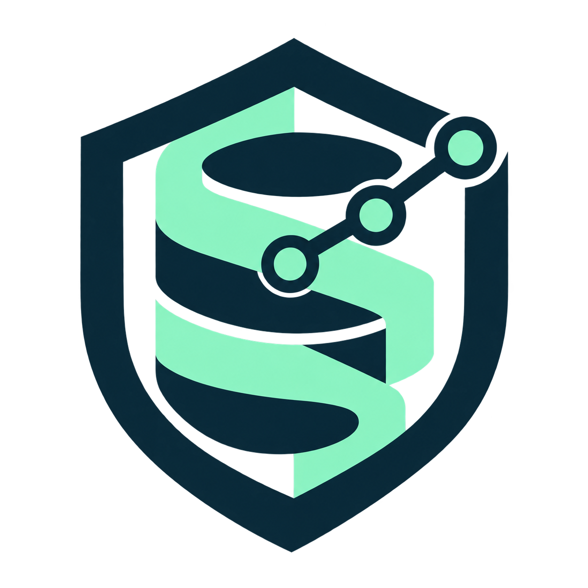

Assess SQL STIGs
Preserve rule IDs, severity, CCI references, checks and fixes. Record evidence, status, ownership and remediation for every rule, including justified exceptions.
Read STIG coverage
SQLIQAZURE SQL / STIG & COMPLIANCE REVIEW
Review SQL Server STIG requirements against your Azure deployment. Track applicability, evidence and remediation through assessment and migration planning.
Open source. Built on AEF Core. For Codex & Claude.
DISA SQL SERVER 2022 / PINNED APRIL 2026 RELEASE
Source-linked requirements. Visible evidence gaps.
A report your IT team can work through.
Database operations / Security & risk / Finance & audit
01 / SCOPE
The pinned SQL Server 2022 register preserves all 102 DISA rules. Review each rule’s applicability to Azure SQL Database, Managed Instance or SQL Server on Azure VMs; a catalog entry alone is not a compliance result.
Preserve rule IDs, severity, CCI references, checks and fixes. Record evidence, status, ownership and remediation for every rule, including justified exceptions.
Read STIG coverageCarry the control register from source to target. Review compatibility, financial reconciliation, security drift, cutover criteria and rollback before approval.
Review migration gatesUse SP 800-53 as a separate control catalog and SP 800-52 Rev. 2 for TLS. Review client and server evidence; neither catalog substitutes for a SQL STIG assessment.
Read the TLS guide02 / THE AEF FOUNDATION
Azure, SQL and compliance reviews run in parallel through the pinned AEF graph. Shared Codex and Claude skills carry mandatory review checks; hooks validate routing and the returned offline review contract.
AZURE SPECIALIST
Review the Azure service model, migration path, identity, networking, encryption and recovery requirements. Record which controls need Azure assurance and which remain with the customer.
Microsoft guidance informs the plan. Missing source or target evidence stays unassessed; live Azure access still requires exact signed approval.
The graph prepares and validates offline review contracts. Codex and Claude reason over supplied evidence. Hooks do not certify model behavior or prove database compliance.
03 / SQL MIGRATION REVIEW
The migration workflow prepares a review contract for all three specialists. Each stage needs evidence and owner decisions before a separate operator can authorize execution.
Inventory dependencies, data scope and every STIG rule. Record findings, applicability, inherited controls and unresolved evidence.
Check compatibility, identities, audit settings, encryption and recovery. Preserve each rule when the Azure service model changes.
Define ledger totals, balances and record-count reconciliation. Document outage limits, rollback triggers and restore evidence.
Record go/no-go approvals and exceptions. Require post-migration control evidence, reconciliation and application-owner acceptance.
Migration support produces plans and evidence requirements. SQLIQ does not execute migrations or cutovers. Supported broker writes require separate exact-plan approval.
04 / EVIDENCE & REPORTING
Open a metric to inspect the evidence required, the financial processes to consider and the next review step.
HTML and PDF reports preserve the STIG references, checks, fixes, evidence status and recommendations. Add your company name and logo alongside SQLIQ in PDF reports.
Download the IT & board briefing PDFThe 102-rule STIG register, before evidence is supplied.
EVIDENCE BACKLOG
Identify which databases support the general ledger, payments, reconciliation and financial reporting. Record business owners, reporting deadlines and data sensitivity. This sample has no business-impact assessment.
Rule-specific access, audit, encryption, configuration and recovery evidence. Keep Azure assurance separate from customer configuration, and preserve source and target snapshots for migration review.
Assign the database, security and finance owners. Tailor each rule to the Azure service and obtain exact signed approval before collecting live evidence.
Inspect the 102-rule sample register HTMLFINDINGS & EXPOSURE
Zero recorded findings does not establish that a database is secure. All 102 sample rules remain unassessed.
STIG rule ID, severity, affected database, dated evidence, failed requirement and the reviewer’s applicability decision. Include the source check, fix and remediation owner.
Document the affected financial process: unauthorized ledger changes, lost audit evidence, reconciliation differences or delayed close. Loss amounts, regulatory consequences and materiality require organization-specific evidence; none are estimated here.
Assign an owner, target date, proposed correction, validation steps and rollback plan. Execution requires a separate approval for the exact write plan.
Read the STIG review scopeASSURANCE & CLOSURE
A reviewer must establish applicability and assess sufficient evidence against the STIG check. Catalog inclusion, a planned fix or an Azure inheritance assertion cannot count as a pass.
Retain source references, evidence dates, scope, owner decisions and outstanding exceptions. Identify unassessed rules and separate Azure-inherited evidence from customer responsibilities.
Collect fresh evidence under an approved read plan and record the review outcome. After migration, compare source and target controls and reconcile financial balances. Keep “not applicable” decisions distinct from passes.
Inspect the IT & board briefing PDFIllustrative counts from the empty STIG register. No live database has been assessed. Catalog coverage does not establish certification or satisfaction of banking and accounting obligations.
A SHARED PLATFORM. DISTINCT RESPONSIBILITIES.
Platform controls may be inherited when service-specific assurance supports them. SQL Database, Managed Instance and SQL Server on VMs require different rule tailoring. Inheritance never grants an automatic pass.
Database access, data classification, customer configuration, audit review and migration decisions need named owners and evidence. Client TLS validation remains in scope alongside the STIG review.
Supplied findings, source references and evidence gaps. Evidence quality, reviewer authority and financial applicability require independent review.
05 / GET STARTED
Prepare a STIG review and migration plan locally, then build the full evidence register. These commands use no database credentials and do not scan a live endpoint.
Open setup instructions# In your SQLIQ checkout
uv sync --locked --group dev
uv run azure-sql-agent verify
uv run azure-sql-agent graph
# Route the specialist compliance reviews
uv run azure-sql-agent guide \
--workflow compliance
# Prepare migration requirements and gates
uv run azure-sql-agent guide \
--workflow migration
# Generate an offline evidence register
uv run azure-sql-agent compliance-report \
--catalog sql-2022-stigs \
--output stig-review.htmlGuidance runs offline. Live reads and supported writes require external approval.
Scoped skills keep context focused. Deterministic checks enforce boundaries. AEF learning proposes changes for human review; it cannot expand access.